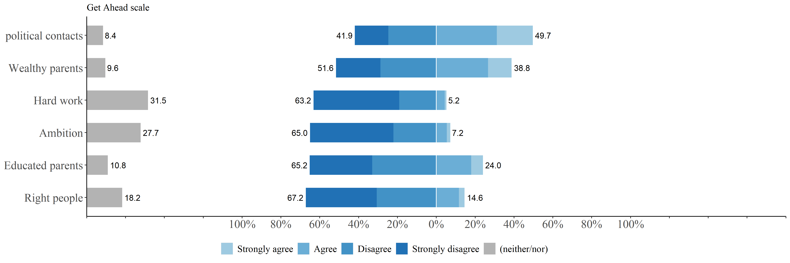

Meritocracy and distributive preferences ISSP
miércoles 01 julio 2020 20:50:31
En el presente documento se exponen los análisis realizados a la base de datos creada en data-prep.
En la primera sección se entregan análisis descriptivos de las principales variables dependientes e independientes.
En la segunda sección se exponen los análisis factoriales a partir de los cuales se imputan valores para utilizar en la seccion de analisis multinivel. Además, en la segunda sección se incorpora un análisis de invarianza de medida y una ecuación estructural que resume los modelos a testear.
En la tercera sección se presentan los modelos multinivel que son utilizados para el artículo. Se calcula la correlación intraclase, se evalúan los efectos de las variables nacionales e individuales, para posteriormente evaluar pendientes aleatorias e interacciones entre niveles.
Libraries
library(sjPlot)
library(sjmisc) # several functions,ej read_stata
library(descr)
library(memisc) # codebook
library(psych) # cor2latex
library(corrplot) # graph correlations
library(lavaan)
library(stargazer)
library(semTools)
library(plyr) # count
library(dplyr)
library(car) # recode
library(ggplot2)
library(Hmisc)
library(tidyverse)
library(data.table)
library(stringr)
library(countrycode)
library(lme4)
library(texreg)
library(mice)
library(ggrepel) # for scatter labels in sjp.scatter
library(semPlot)
library(haven)
library(sjlabelled)
library(kableExtra)
library(ggeffects)Load data
load(file = "input/data/proc/redistrib.rda")
load(file="input/data/proc/mer_pref.rda")
load("input/data/proc/redistrib.rda")
load("input/data/proc/getahead.rda")
load("input/data/proc/detearn.rda")1 Descriptives
# Summary table to latex
sink("output/results/desctab_red.html")
stargazer(redistrib[-c(1,2)], type="html"); sink()| Statistic | N | Mean | St. Dev. | Min | Pctl(25) | Pctl(75) | Max |
| income_dif | 54,400 | 3.875 | 1.089 | 1.000 | 3.000 | 5.000 | 5.000 |
| unemployed | 54,698 | 3.912 | 0.987 | 1.000 | 3.000 | 5.000 | 5.000 |
| taxes | 53,258 | 4.016 | 0.779 | 1.000 | 4.000 | 5.000 | 5.000 |
| health | 54,237 | 2.464 | 1.312 | 1.000 | 1.000 | 4.000 | 5.000 |
| educ | 54,220 | 2.502 | 1.321 | 1.000 | 1.000 | 4.000 | 5.000 |



2 Modelos de medida
2.1 MODELS A: MERIT & REDISTRIB
2.2 Measurement & structural mode
2.2.1 Measurement simple
cfa_mer_red1 <- '
# latent variables
merit =~ hwork + ambition
parent=~ wealthy + pareduc
backg=~ race + gender
network=~ people + polcone
bmerit =~ welljob + hardjob
need=~ family + child
redist =~ income_dif + unemployed + taxes
accum =~ health + educ'
fit_mer_red1 <- cfa(cfa_mer_red1,data=merit_redist,missing = "ML")
# summary(fit_mer_red1, fit.measures=TRUE,standardized=TRUE)
fit_mer_red1c <- cfa(cfa_mer_red1,data=merit_redist,
ordered = names(merit_redist[3:10,19:29]))
# summary(fit_mer_redc, fit.measures=TRUE,standardized=TRUE)
sum_fit<- bind_rows(fitmeasures(fit_mer_red1)[c("chisq","df","cfi","rmsea","rmsea.ci.lower","rmsea.ci.upper")],
fitmeasures(fit_mer_red1c)[c("chisq","df","cfi","rmsea","rmsea.ci.lower","rmsea.ci.upper")])
sum_fit$mod <- c("Model 1","Model 2")
sum_fit$est <- c("MLR","DWLS")
#sum_fit <- select(sum_fit,mod,est,everything())
colnames <- c("Model","Estimator","$\\chi2$","df","CFI","RMSEA","RMSEA CI lower", "RMSEA CI upper")
sumtable01<- kable(sum_fit,digits = 3,format = "html",row.names = F,booktabs=T, caption = "Summary fit indices wave 01",col.names = colnames,escape = FALSE) %>%
kable_styling(full_width = F) %>%
collapse_rows(columns = 1,valign = "middle") %>%
footnote(number = c("Model 1: Continue item",
"Model 2: Ordered item)"));sumtable01| Model | Estimator | \(\chi2\) | df | CFI | RMSEA | RMSEA CI lower | RMSEA CI upper |
|---|---|---|---|---|---|---|---|
| 4521.284 | 91 | 0.979 | 0.030 | 0.029 | 0.031 | Model 1 | MLR |
| 1966.626 | 91 | 0.996 | 0.026 | 0.025 | 0.027 | Model 2 | DWLS |
| 1 Model 1: Continue item | |||||||
| 2 Model 2: Ordered item) |
# Path
png("output/results/path_mer_red1.png",width=800,height=650)
semPlot::semPaths(fit_mer_red1,layout = "circle", rotation = 3,
intercepts = FALSE, style = "lisrel", curvePivot = TRUE,
sizeMan = 4, sizeLat = 6)
dev.off()## png
## 2 # CFA with secon order unmerit
cfa_mer_red2 <- '
# latent variables
merit =~ hwork + ambition
parent=~ wealthy + pareduc
backg=~ race + gender
network=~ people + polcone
bmerit =~ welljob + hardjob
need=~ family + child
redist =~ income_dif + unemployed + taxes
accum =~ health + educ
unmerit =~ parent + backg + network
'
fit_mer_red2 <- cfa(cfa_mer_red2,data=merit_redist,
missing = "ML")
# summary(fit_mer_red2, fit.measures=TRUE,standardized=TRUE)sum_fit<- bind_rows(fitmeasures(fit_mer_red2)[c("chisq","df","cfi","rmsea","rmsea.ci.lower","rmsea.ci.upper")])
colnames <- c("$\\chi2$","df","CFI","RMSEA","RMSEA CI lower", "RMSEA CI upper")
sumtable01<- kable(sum_fit,digits = 3,format = "html",row.names = F,booktabs=T, caption = "Summary fit indices wave 01",col.names = colnames,escape = FALSE) %>%
kable_styling(full_width = F) %>%
collapse_rows(columns = 1,valign = "middle");sumtable01| \(\chi2\) | df | CFI | RMSEA | RMSEA CI lower | RMSEA CI upper |
|---|---|---|---|---|---|
| 5771.437 | 101 | 0.973 | 0.032 | 0.031 | 0.033 |
# CFA with secon order unmerit: Invarianza
# fit_mer_red2 <- cfa(cfa_mer_red2,data=merit_redist,
# missing = "ML", group= "v5")
# summary(fit_mer_red2, fit.measures=TRUE,standardized=TRUE)El modelo no converge.
3 Correlation factor scores
# Factor scores
fscores <- as.data.frame(lavPredict(fit_mer_red2))
# Correlations
cormat=cor(fscores[c(7,8,1,9,5,6)],
use="pairwise.complete.obs")
#save
png("output/results/corplot_totscores.png",width=600,height=600)
corrplot.mixed(cormat)
dev.off()## png
## 24 Modelo de estructura
# Path
png("output/results/path_mer_red2.png",width=800,height=650)
semPlot::semPaths(fit_mer_red2,layout = "tree", rotation = 2,
intercepts = FALSE, style = "lisrel", curvePivot = TRUE,
sizeMan = 4, sizeLat = 6)
dev.off() ## png
## 2 # Structural model
sem_mer_red1 <- '
# latent variables
merit =~ hwork + ambition
parent=~ wealthy + pareduc
backg=~ race + gender
network=~ people + polcone
bmerit =~ welljob + hardjob
need=~ family + child
redist =~ income_dif + unemployed + taxes
accum =~ health + educ
unmerit =~ parent + backg + network
# regressions
redist + accum ~ merit + unmerit + bmerit + need
'
fitsem_mer_red1 <- sem(sem_mer_red1,data=merit_redist,
missing = "ML")
# summary(fitsem_mer_red1, fit.measures=TRUE,standardized=TRUE)
semPlot::semPaths(fitsem_mer_red1,layout = "tree", rotation = 2,
intercepts = FALSE, style = "lisrel", curvePivot = TRUE,
sizeMan = 4, sizeLat = 6)
png("output/results/fitsem_mer_red1,png",width=800, height=650)
# Path
semPlot::semPaths(fitsem_mer_red1,layout = "tree", rotation = 2,
intercepts = FALSE, style = "lisrel", curvePivot = TRUE,
sizeMan = 4, sizeLat = 6)
dev.off()## png
## 2# saque este argumento del codigo de abajo op==“~”
# Table
tabreg=subset(standardizedsolution(fitsem_mer_red1) ,op=="~", select=c(lhs,rhs,est.std,z))
tabreg2=subset(tabreg, select=c(lhs,rhs,est.std,z))
tabredist=subset(tabreg2,lhs=="redist",
select=rhs:z)
tabaccumt=subset(tabreg2,lhs=="accum",select=est.std:z)
tabtot=cbind(tabredist,tabaccumt)
tabtot2=rbind(tabtot$est.std,tabtot$z)5 MODELS C: MERITOCRACY
5.1 Macro Descriptives
load("input/data/proc/meritocracy.rda")
# Adjust data
merit_agg=aggregate(meritocracy, by=list(meritocracy$v5c),
FUN=mean, na.rm=TRUE)
names(merit_agg)[names(merit_agg)=="Group.1"]="v5c"
# names(merit_agg)
# dim(merit_agg)5.1.1 Macro level corr
load("input/data/proc/mer_pref_polycor.rda")
corMat <- cor(mer_pref_polycor, use="pairwise.complete.obs")
corrplot.mixed(corMat)
plot_scatter(merit_agg, gini_net, j_bmerit,
dot.labels = merit_agg$v5c,
fit.line = "lm",
show.ci = TRUE)
plot_scatter(merit_agg, gini_net,unmerit,
dot.labels = merit_agg$v5c,
fit.line = "lm",
show.ci = TRUE) 
# Save
png("output/results/gini_bmerit.png")
plot_scatter(merit_agg, gini_net,unmerit,
dot.labels = merit_agg$v5c,
fit.line = "lm",
show.ci = TRUE)
dev.off()## png
## 2
png("output/results/fi_need.png");
plot_scatter(merit_agg, gini_net,need,
dot.labels = merit_agg$v5c,
fit.line = "lm",
show.ci = TRUE)
dev.off()## png
## 2 plot_scatter(merit_agg, j_fi_index, need,
dot.labels = merit_agg$v5c,
fit.line = "lm",
show.ci = TRUE) 
png("output/results/gini_fi.png")
plot_scatter(merit_agg, j_fi_index, need,
dot.labels = merit_agg$v5c,
fit.line = "lm",
show.ci = TRUE)
dev.off()## png
## 2
6 Models meritocracy and preferences
#Se agrega la base de datos dejando paises como
mer_pref_agg=aggregate(mer_pref, by=list(mer_pref$v5c),
FUN=mean, na.rm=TRUE)
names(mer_pref_agg)[names(mer_pref_agg)=="Group.1"]="v5c"
##
plot_scatter(mer_pref_agg,merit , bmerit,
dot.labels = mer_pref_agg$v5c,
fit.line = lm,
show.ci = TRUE)
png("output/results/merit_bmerit.png")
plot_scatter(mer_pref_agg,merit , bmerit,
dot.labels = mer_pref_agg$v5c,
fit.line = lm,
show.ci = TRUE)
dev.off()## png
## 2##
plot_scatter(mer_pref_agg, merit, redist,
dot.labels = mer_pref_agg$v5c,
fit.line = lm,
show.ci = TRUE)
png("output/results/merit_redis.png")
plot_scatter(mer_pref_agg, merit, redist,
dot.labels = mer_pref_agg$v5c,
fit.line = lm,
show.ci = TRUE)
dev.off() ## png
## 2##
plot_scatter(mer_pref_agg, unmerit,redist,
dot.labels = mer_pref_agg$v5c,
fit.line = "lm",
show.ci = TRUE) 
png("output/results/unmerit_redis.png")
plot_scatter(mer_pref_agg, unmerit,redist,
dot.labels = mer_pref_agg$v5c,
fit.line = "lm",
show.ci = TRUE)
dev.off()## png
## 2##
plot_scatter(mer_pref_agg, redist,accum,
dot.labels = mer_pref_agg$v5c,
fit.line = "lm",
show.ci = TRUE) 
png("output/results/redis_accum.png")
plot_scatter(mer_pref_agg, redist,accum,
dot.labels = mer_pref_agg$v5c,
fit.line = "lm",
show.ci = TRUE)
dev.off()## png
## 2 load("input/data/proc/pref_agg.rda")
plot_scatter(pref_agg, gini_net, accum,
dot.labels = pref_agg$v5c,
fit.line = "lm",
show.ci = TRUE)
#table(pref_agg$redis)
plot_scatter(pref_agg, gini_net, redist,
dot.labels = pref_agg$v5c,
fit.line = lm,
show.ci = TRUE )
# Sin ZAF outlier (igual, no cambia)
pref_agg2 <- pref_agg[which(pref_agg$v5c!='ZAF'), ]
plot_scatter(pref_agg2, gini_net, redist,
dot.labels = pref_agg2$v5c,
fit.line = lm,
show.ci = TRUE
)
7 Modelos
7.1 Modelos nulos: varianza intraclase.
7.1.1 Modelos nulo Preferencias resdistributivas
# Modelo nulo
results_0_redist = lmer(redist ~ 1 + (1| v5c), data = mer_pref, REML=F)
# Correlacion intraclase redist
reghelper::ICC(results_0_redist)## [1] 0.1491119Aproximadamente un 15% de la varianza de las preferencias redistributivas se encuentra entre paises.
7.1.2 Modelos nulo Preferencias por accumulacion
# Modelo nulo
results_0_accum = lmer(accum ~ 1 + (1| v5c), data = mer_pref, REML=F)
# Correlacion intraclases accum
reghelper::ICC(results_0_accum)## [1] 0.1817693Aproximadamente un 18% de la varianza de las preferencias redistributivas se encuentra entre paises.
7.2 Modelos con predictores.
7.2.1 Demograficos, individuales sustantivos y macrovariables: redist
results_1_redist_dem = lmer(redist ~ univ + as.factor(quintile_miss) + sstatus + sex + age + 1 + (1| v5c), data = mer_pref, REML=F)
results_1_redist_indsust = lmer(redist ~ univ + as.factor(quintile_miss) + sstatus + sex + age + merit + bmerit + unmerit + need + 1 + (1| v5c), data = mer_pref, REML=F)
results_1_redist_macro = lmer(redist ~ univ + as.factor(quintile_miss) + sstatus + sex + age + merit + bmerit + unmerit + need + gini_neto + fi_index + 1 + (1| v5c), data = mer_pref, REML=F)
htmlreg(list(results_1_redist_dem, results_1_redist_indsust,results_1_redist_macro))| Model 1 | Model 2 | Model 3 | |
|---|---|---|---|
| (Intercept) | -0.01 | -0.02 | 0.84 |
| (0.04) | (0.04) | (0.46) | |
| univ | -0.14*** | -0.11*** | -0.11*** |
| (0.01) | (0.01) | (0.01) | |
| as.factor(quintile_miss)2 | -0.03** | -0.03** | -0.03** |
| (0.01) | (0.01) | (0.01) | |
| as.factor(quintile_miss)3 | -0.08*** | -0.06*** | -0.06*** |
| (0.01) | (0.01) | (0.01) | |
| as.factor(quintile_miss)4 | -0.11*** | -0.09*** | -0.09*** |
| (0.01) | (0.01) | (0.01) | |
| as.factor(quintile_miss)5 | -0.20*** | -0.16*** | -0.16*** |
| (0.02) | (0.02) | (0.02) | |
| as.factor(quintile_miss)6 | -0.11*** | -0.10*** | -0.10*** |
| (0.01) | (0.01) | (0.01) | |
| sstatus | -0.00*** | -0.00*** | -0.00*** |
| (0.00) | (0.00) | (0.00) | |
| sex | 0.05*** | 0.05*** | 0.05*** |
| (0.01) | (0.00) | (0.00) | |
| age | 0.00*** | 0.00*** | 0.00*** |
| (0.00) | (0.00) | (0.00) | |
| merit | -0.05*** | -0.05*** | |
| (0.01) | (0.01) | ||
| bmerit | 0.08*** | 0.08*** | |
| (0.01) | (0.01) | ||
| unmerit | 0.07*** | 0.07*** | |
| (0.01) | (0.01) | ||
| need | 0.15*** | 0.15*** | |
| (0.00) | (0.00) | ||
| gini_neto | -0.01* | ||
| (0.01) | |||
| fi_index | -0.07 | ||
| (0.05) | |||
| AIC | 96389.18 | 93969.99 | 93969.50 |
| BIC | 96495.99 | 94112.40 | 94129.72 |
| Log Likelihood | -48182.59 | -46969.00 | -46966.75 |
| Num. obs. | 54213 | 54213 | 54213 |
| Num. groups: v5c | 40 | 40 | 40 |
| Var: v5c (Intercept) | 0.06 | 0.05 | 0.05 |
| Var: Residual | 0.34 | 0.33 | 0.33 |
| p < 0.001; p < 0.01; p < 0.05 | |||

png("output/results/results_1_redist_macro.png")
sjPlot::plot_model(results_1_redist_macro, type="std")
dev.off()png 2
## Data: mer_pref
## Models:
## results_1_redist_dem: redist ~ univ + as.factor(quintile_miss) + sstatus + sex + age +
## results_1_redist_dem: 1 + (1 | v5c)
## results_1_redist_macro: redist ~ univ + as.factor(quintile_miss) + sstatus + sex + age +
## results_1_redist_macro: merit + bmerit + unmerit + need + gini_neto + fi_index +
## results_1_redist_macro: 1 + (1 | v5c)
## npar AIC BIC logLik deviance Chisq Df Pr(>Chisq)
## results_1_redist_dem 12 96389 96496 -48183 96365
## results_1_redist_macro 18 93970 94130 -46967 93934 2431.7 6 < 0.00000000000000022 ***
## ---
## Signif. codes: 0 '***' 0.001 '**' 0.01 '*' 0.05 '.' 0.1 ' ' 1## Data: mer_pref
## Models:
## results_1_redist_indsust: redist ~ univ + as.factor(quintile_miss) + sstatus + sex + age +
## results_1_redist_indsust: merit + bmerit + unmerit + need + 1 + (1 | v5c)
## results_1_redist_macro: redist ~ univ + as.factor(quintile_miss) + sstatus + sex + age +
## results_1_redist_macro: merit + bmerit + unmerit + need + gini_neto + fi_index +
## results_1_redist_macro: 1 + (1 | v5c)
## npar AIC BIC logLik deviance Chisq Df Pr(>Chisq)
## results_1_redist_indsust 16 93970 94112 -46969 93938
## results_1_redist_macro 18 93970 94130 -46967 93934 4.4851 2 0.1062La variable que mayor efecto genera es el quintil de ingreso, lo cual va en la linea de la teoria del autointeres. Seguidamente, las preferencias por un ingreso basado en las necedades poseen una relacion positiva y significativa.
Respecto a la variable de mayor interes, la percepcion de meritocracia, se puede apreciar que posee un ligero efecto negativo en las preferencias redistributivas.
7.2.2 Demograficos, individuales sustantivos y macrovariables: accum
results_1_accum_dem = lmer(accum ~ univ + as.factor(quintile_miss) + sstatus + sex + age + 1 + (1| v5c), data = mer_pref, REML=F)
results_1_accum_indsust = lmer(accum ~ univ + as.factor(quintile_miss) + sstatus + sex + age + merit + bmerit + unmerit + need + 1 + (1| v5c), data = mer_pref, REML=F)
results_1_accum_macro = lmer(accum ~ univ + as.factor(quintile_miss) + sstatus + sex + age + merit + bmerit + unmerit + need + gini_neto + fi_index + 1 + (1| v5c), data = mer_pref, REML=F)
htmlreg(list(results_1_accum_dem, results_1_accum_indsust,results_1_accum_macro))| Model 1 | Model 2 | Model 3 | |
|---|---|---|---|
| (Intercept) | -0.04 | -0.03 | -1.28 |
| (0.08) | (0.08) | (0.77) | |
| univ | 0.16*** | 0.14*** | 0.14*** |
| (0.01) | (0.01) | (0.01) | |
| as.factor(quintile_miss)2 | 0.03* | 0.03 | 0.03 |
| (0.02) | (0.02) | (0.02) | |
| as.factor(quintile_miss)3 | 0.07*** | 0.06*** | 0.06*** |
| (0.02) | (0.02) | (0.02) | |
| as.factor(quintile_miss)4 | 0.09*** | 0.07*** | 0.07*** |
| (0.02) | (0.02) | (0.02) | |
| as.factor(quintile_miss)5 | 0.15*** | 0.13*** | 0.13*** |
| (0.03) | (0.03) | (0.03) | |
| as.factor(quintile_miss)6 | 0.07*** | 0.07*** | 0.07*** |
| (0.02) | (0.02) | (0.02) | |
| sstatus | 0.00*** | 0.00*** | 0.00*** |
| (0.00) | (0.00) | (0.00) | |
| sex | -0.12*** | -0.11*** | -0.11*** |
| (0.01) | (0.01) | (0.01) | |
| age | -0.00*** | -0.00*** | -0.00*** |
| (0.00) | (0.00) | (0.00) | |
| merit | 0.04*** | 0.04*** | |
| (0.01) | (0.01) | ||
| bmerit | -0.09*** | -0.09*** | |
| (0.02) | (0.02) | ||
| unmerit | 0.03*** | 0.03*** | |
| (0.01) | (0.01) | ||
| need | -0.11*** | -0.11*** | |
| (0.01) | (0.01) | ||
| gini_neto | 0.04*** | ||
| (0.01) | |||
| fi_index | -0.02 | ||
| (0.09) | |||
| AIC | 151950.37 | 151584.02 | 151567.43 |
| BIC | 152057.18 | 151726.43 | 151727.64 |
| Log Likelihood | -75963.18 | -75776.01 | -75765.72 |
| Num. obs. | 54213 | 54213 | 54213 |
| Num. groups: v5c | 40 | 40 | 40 |
| Var: v5c (Intercept) | 0.21 | 0.22 | 0.13 |
| Var: Residual | 0.96 | 0.95 | 0.95 |
| p < 0.001; p < 0.01; p < 0.05 | |||

png("output/results/results_1_accum_macro")
sjPlot::plot_model(results_1_accum_macro, type="std")
dev.off()png 2
## Data: mer_pref
## Models:
## results_1_accum_dem: accum ~ univ + as.factor(quintile_miss) + sstatus + sex + age +
## results_1_accum_dem: 1 + (1 | v5c)
## results_1_accum_indsust: accum ~ univ + as.factor(quintile_miss) + sstatus + sex + age +
## results_1_accum_indsust: merit + bmerit + unmerit + need + 1 + (1 | v5c)
## npar AIC BIC logLik deviance Chisq Df Pr(>Chisq)
## results_1_accum_dem 12 151950 152057 -75963 151926
## results_1_accum_indsust 16 151584 151726 -75776 151552 374.35 4 < 0.00000000000000022 ***
## ---
## Signif. codes: 0 '***' 0.001 '**' 0.01 '*' 0.05 '.' 0.1 ' ' 1## Data: mer_pref
## Models:
## results_1_accum_indsust: accum ~ univ + as.factor(quintile_miss) + sstatus + sex + age +
## results_1_accum_indsust: merit + bmerit + unmerit + need + 1 + (1 | v5c)
## results_1_accum_macro: accum ~ univ + as.factor(quintile_miss) + sstatus + sex + age +
## results_1_accum_macro: merit + bmerit + unmerit + need + gini_neto + fi_index +
## results_1_accum_macro: 1 + (1 | v5c)
## npar AIC BIC logLik deviance Chisq Df Pr(>Chisq)
## results_1_accum_indsust 16 151584 151726 -75776 151552
## results_1_accum_macro 18 151567 151728 -75766 151531 20.591 2 0.00003378 ***
## ---
## Signif. codes: 0 '***' 0.001 '**' 0.01 '*' 0.05 '.' 0.1 ' ' 1Cada modelo es significativamente mejor que el anterior. Respecto al modelo anterior si bien los efectos son menores, puede verse un efecto mucho más claro de una variable macro, el gini_neto (Esto va en la linea de la h: un pais más desigual fomenta preferencia por )
7.3 Modelos con pendientes aleatorias.
# Redis
results_2_redist_macro_bv = lmer(redist ~ univ + as.factor(quintile_miss) + sstatus + sex + age + merit + bmerit + unmerit + need + gini_neto + fi_index + 1 + (1 + merit| v5c), data= mer_pref, REML=F)
htmlreg(list(results_1_redist_macro, results_2_redist_macro_bv))| Model 1 | Model 2 | |
|---|---|---|
| (Intercept) | 0.84 | 1.02** |
| (0.46) | (0.37) | |
| univ | -0.11*** | -0.11*** |
| (0.01) | (0.01) | |
| as.factor(quintile_miss)2 | -0.03** | -0.03** |
| (0.01) | (0.01) | |
| as.factor(quintile_miss)3 | -0.06*** | -0.06*** |
| (0.01) | (0.01) | |
| as.factor(quintile_miss)4 | -0.09*** | -0.09*** |
| (0.01) | (0.01) | |
| as.factor(quintile_miss)5 | -0.16*** | -0.16*** |
| (0.02) | (0.01) | |
| as.factor(quintile_miss)6 | -0.10*** | -0.10*** |
| (0.01) | (0.01) | |
| sstatus | -0.00*** | -0.00*** |
| (0.00) | (0.00) | |
| sex | 0.05*** | 0.05*** |
| (0.00) | (0.00) | |
| age | 0.00*** | 0.00*** |
| (0.00) | (0.00) | |
| merit | -0.05*** | -0.06** |
| (0.01) | (0.02) | |
| bmerit | 0.08*** | 0.09*** |
| (0.01) | (0.01) | |
| unmerit | 0.07*** | 0.07*** |
| (0.01) | (0.01) | |
| need | 0.15*** | 0.15*** |
| (0.00) | (0.00) | |
| gini_neto | -0.01* | -0.02*** |
| (0.01) | (0.00) | |
| fi_index | -0.07 | -0.06 |
| (0.05) | (0.04) | |
| AIC | 93969.50 | 93578.09 |
| BIC | 94129.72 | 93756.10 |
| Log Likelihood | -46966.75 | -46769.05 |
| Num. obs. | 54213 | 54213 |
| Num. groups: v5c | 40 | 40 |
| Var: v5c (Intercept) | 0.05 | 0.05 |
| Var: Residual | 0.33 | 0.33 |
| Var: v5c merit | 0.01 | |
| Cov: v5c (Intercept) merit | 0.02 | |
| p < 0.001; p < 0.01; p < 0.05 | ||
graf2=ggpredict(results_2_redist_macro_bv, terms = c("merit","v5c [sample = 9]"), type="re")
plot(graf2)
png 2
## Data: mer_pref
## Models:
## results_1_redist_macro: redist ~ univ + as.factor(quintile_miss) + sstatus + sex + age +
## results_1_redist_macro: merit + bmerit + unmerit + need + gini_neto + fi_index +
## results_1_redist_macro: 1 + (1 | v5c)
## results_2_redist_macro_bv: redist ~ univ + as.factor(quintile_miss) + sstatus + sex + age +
## results_2_redist_macro_bv: merit + bmerit + unmerit + need + gini_neto + fi_index +
## results_2_redist_macro_bv: 1 + (1 + merit | v5c)
## npar AIC BIC logLik deviance Chisq Df Pr(>Chisq)
## results_1_redist_macro 18 93970 94130 -46967 93934
## results_2_redist_macro_bv 20 93578 93756 -46769 93538 395.41 2 < 0.00000000000000022 ***
## ---
## Signif. codes: 0 '***' 0.001 '**' 0.01 '*' 0.05 '.' 0.1 ' ' 1# accum
results_2_accum_macro_bv = lmer(accum ~ univ + as.factor(quintile_miss) + sstatus + sex + age + merit + bmerit + unmerit + need + gini_neto + fi_index + 1 + (1 + merit| v5c), data = mer_pref, REML=F)
htmlreg(list(results_1_accum_macro, results_2_accum_macro_bv))| Model 1 | Model 2 | |
|---|---|---|
| (Intercept) | -1.28 | -0.78 |
| (0.77) | (0.70) | |
| univ | 0.14*** | 0.13*** |
| (0.01) | (0.01) | |
| as.factor(quintile_miss)2 | 0.03 | 0.03* |
| (0.02) | (0.02) | |
| as.factor(quintile_miss)3 | 0.06*** | 0.07*** |
| (0.02) | (0.02) | |
| as.factor(quintile_miss)4 | 0.07*** | 0.07*** |
| (0.02) | (0.02) | |
| as.factor(quintile_miss)5 | 0.13*** | 0.13*** |
| (0.03) | (0.03) | |
| as.factor(quintile_miss)6 | 0.07*** | 0.07*** |
| (0.02) | (0.02) | |
| sstatus | 0.00*** | 0.00*** |
| (0.00) | (0.00) | |
| sex | -0.11*** | -0.11*** |
| (0.01) | (0.01) | |
| age | -0.00*** | -0.00*** |
| (0.00) | (0.00) | |
| merit | 0.04*** | 0.05* |
| (0.01) | (0.02) | |
| bmerit | -0.09*** | -0.10*** |
| (0.02) | (0.02) | |
| unmerit | 0.03*** | 0.03*** |
| (0.01) | (0.01) | |
| need | -0.11*** | -0.11*** |
| (0.01) | (0.01) | |
| gini_neto | 0.04*** | 0.05*** |
| (0.01) | (0.01) | |
| fi_index | -0.02 | -0.11 |
| (0.09) | (0.08) | |
| AIC | 151567.43 | 151447.81 |
| BIC | 151727.64 | 151625.82 |
| Log Likelihood | -75765.72 | -75703.90 |
| Num. obs. | 54213 | 54213 |
| Num. groups: v5c | 40 | 40 |
| Var: v5c (Intercept) | 0.13 | 0.13 |
| Var: Residual | 0.95 | 0.95 |
| Var: v5c merit | 0.01 | |
| Cov: v5c (Intercept) merit | 0.02 | |
| p < 0.001; p < 0.01; p < 0.05 | ||
graf2=ggpredict(results_2_accum_macro_bv, terms = c("merit","v5c [sample = 9]"), type="re")
plot(graf2)
png 2
## Data: mer_pref
## Models:
## results_1_accum_macro: accum ~ univ + as.factor(quintile_miss) + sstatus + sex + age +
## results_1_accum_macro: merit + bmerit + unmerit + need + gini_neto + fi_index +
## results_1_accum_macro: 1 + (1 | v5c)
## results_2_accum_macro_bv: accum ~ univ + as.factor(quintile_miss) + sstatus + sex + age +
## results_2_accum_macro_bv: merit + bmerit + unmerit + need + gini_neto + fi_index +
## results_2_accum_macro_bv: 1 + (1 + merit | v5c)
## npar AIC BIC logLik deviance Chisq Df Pr(>Chisq)
## results_1_accum_macro 18 151567 151728 -75766 151531
## results_2_accum_macro_bv 20 151448 151626 -75704 151408 123.62 2 < 0.00000000000000022 ***
## ---
## Signif. codes: 0 '***' 0.001 '**' 0.01 '*' 0.05 '.' 0.1 ' ' 17.4 Modelos con interacciones.
#Redis
results_3_redist_macro_bvi = lmer(redist ~ univ + as.factor(quintile_miss) + sstatus + sex + age + merit + bmerit + unmerit + need + merit*gini_neto + fi_index + 1 + (1 + merit| v5c), data = mer_pref, REML=F)
htmlreg(list(results_1_redist_macro, results_2_redist_macro_bv, results_3_redist_macro_bvi))| Model 1 | Model 2 | Model 3 | |
|---|---|---|---|
| (Intercept) | 0.84 | 1.02** | 0.73 |
| (0.46) | (0.37) | (0.38) | |
| univ | -0.11*** | -0.11*** | -0.11*** |
| (0.01) | (0.01) | (0.01) | |
| as.factor(quintile_miss)2 | -0.03** | -0.03** | -0.03** |
| (0.01) | (0.01) | (0.01) | |
| as.factor(quintile_miss)3 | -0.06*** | -0.06*** | -0.06*** |
| (0.01) | (0.01) | (0.01) | |
| as.factor(quintile_miss)4 | -0.09*** | -0.09*** | -0.09*** |
| (0.01) | (0.01) | (0.01) | |
| as.factor(quintile_miss)5 | -0.16*** | -0.16*** | -0.16*** |
| (0.02) | (0.01) | (0.01) | |
| as.factor(quintile_miss)6 | -0.10*** | -0.10*** | -0.10*** |
| (0.01) | (0.01) | (0.01) | |
| sstatus | -0.00*** | -0.00*** | -0.00*** |
| (0.00) | (0.00) | (0.00) | |
| sex | 0.05*** | 0.05*** | 0.05*** |
| (0.00) | (0.00) | (0.00) | |
| age | 0.00*** | 0.00*** | 0.00*** |
| (0.00) | (0.00) | (0.00) | |
| merit | -0.05*** | -0.06** | -0.31*** |
| (0.01) | (0.02) | (0.08) | |
| bmerit | 0.08*** | 0.09*** | 0.09*** |
| (0.01) | (0.01) | (0.01) | |
| unmerit | 0.07*** | 0.07*** | 0.07*** |
| (0.01) | (0.01) | (0.01) | |
| need | 0.15*** | 0.15*** | 0.15*** |
| (0.00) | (0.00) | (0.00) | |
| gini_neto | -0.01* | -0.02*** | -0.01* |
| (0.01) | (0.00) | (0.01) | |
| fi_index | -0.07 | -0.06 | -0.06 |
| (0.05) | (0.04) | (0.04) | |
| merit:gini_neto | 0.01** | ||
| (0.00) | |||
| AIC | 93969.50 | 93578.09 | 93571.89 |
| BIC | 94129.72 | 93756.10 | 93758.80 |
| Log Likelihood | -46966.75 | -46769.05 | -46764.94 |
| Num. obs. | 54213 | 54213 | 54213 |
| Num. groups: v5c | 40 | 40 | 40 |
| Var: v5c (Intercept) | 0.05 | 0.05 | 0.05 |
| Var: Residual | 0.33 | 0.33 | 0.33 |
| Var: v5c merit | 0.01 | 0.01 | |
| Cov: v5c (Intercept) merit | 0.02 | 0.01 | |
| p < 0.001; p < 0.01; p < 0.05 | |||

png("output/results/mer_redist_int_gini.png")
sjPlot::plot_model(results_3_redist_macro_bvi, type = c("int"))
dev.off()png 2
# accum
results_3_accum_macro_bvi = lmer(accum ~ univ + as.factor(quintile_miss) + sstatus + sex + age + merit + bmerit + unmerit + need + gini_neto + merit*fi_index + 1 + (1 + merit| v5c), data = mer_pref, REML=F)
htmlreg(list(results_1_accum_macro, results_2_accum_macro_bv, results_3_accum_macro_bvi))| Model 1 | Model 2 | Model 3 | |
|---|---|---|---|
| (Intercept) | -1.28 | -0.78 | -1.64* |
| (0.77) | (0.70) | (0.74) | |
| univ | 0.14*** | 0.13*** | 0.13*** |
| (0.01) | (0.01) | (0.01) | |
| as.factor(quintile_miss)2 | 0.03 | 0.03* | 0.03* |
| (0.02) | (0.02) | (0.02) | |
| as.factor(quintile_miss)3 | 0.06*** | 0.07*** | 0.06*** |
| (0.02) | (0.02) | (0.02) | |
| as.factor(quintile_miss)4 | 0.07*** | 0.07*** | 0.07*** |
| (0.02) | (0.02) | (0.02) | |
| as.factor(quintile_miss)5 | 0.13*** | 0.13*** | 0.13*** |
| (0.03) | (0.03) | (0.03) | |
| as.factor(quintile_miss)6 | 0.07*** | 0.07*** | 0.07*** |
| (0.02) | (0.02) | (0.02) | |
| sstatus | 0.00*** | 0.00*** | 0.00*** |
| (0.00) | (0.00) | (0.00) | |
| sex | -0.11*** | -0.11*** | -0.11*** |
| (0.01) | (0.01) | (0.01) | |
| age | -0.00*** | -0.00*** | -0.00*** |
| (0.00) | (0.00) | (0.00) | |
| merit | 0.04*** | 0.05* | -0.67*** |
| (0.01) | (0.02) | (0.19) | |
| bmerit | -0.09*** | -0.10*** | -0.10*** |
| (0.02) | (0.02) | (0.02) | |
| unmerit | 0.03*** | 0.03*** | 0.03*** |
| (0.01) | (0.01) | (0.01) | |
| need | -0.11*** | -0.11*** | -0.11*** |
| (0.01) | (0.01) | (0.01) | |
| gini_neto | 0.04*** | 0.05*** | 0.05*** |
| (0.01) | (0.01) | (0.01) | |
| fi_index | -0.02 | -0.11 | 0.01 |
| (0.09) | (0.08) | (0.09) | |
| merit:fi_index | 0.10*** | ||
| (0.03) | |||
| AIC | 151567.43 | 151447.81 | 151437.28 |
| BIC | 151727.64 | 151625.82 | 151624.19 |
| Log Likelihood | -75765.72 | -75703.90 | -75697.64 |
| Num. obs. | 54213 | 54213 | 54213 |
| Num. groups: v5c | 40 | 40 | 40 |
| Var: v5c (Intercept) | 0.13 | 0.13 | 0.13 |
| Var: Residual | 0.95 | 0.95 | 0.95 |
| Var: v5c merit | 0.01 | 0.01 | |
| Cov: v5c (Intercept) merit | 0.02 | 0.02 | |
| p < 0.001; p < 0.01; p < 0.05 | |||
png("output/results/mer_accum_int_fi.png")
sjPlot::plot_model(results_3_accum_macro_bvi, type = c("int"))
dev.off()png 2
# guardar tablas
#redis
save(results_1_redist_macro, file = "output/results/results_1_redist_macro.rdata")
save(results_2_redist_macro_bv, file = "output/results/results_2_redist_macro_bv.rdata")
save(results_3_redist_macro_bvi, file = "output/results/results_3_redist_macro_bvi.rdata")
#accum
save(results_1_accum_macro, file = "output/results/results_1_accum_macro.rdata")
save(results_2_accum_macro_bv, file = "output/results/results_2_accum_macro_bv.rdata")
save(results_3_accum_macro_bvi, file = "output/results/results_3_accum_macro_bvi.rdata")#Other analysis
# Individual level vars
mlaccum_1 = lmer(accum ~ 1 + univ + as.factor(quintile_miss) +
sstatus + sex + age + univ*sex + age*age + (1 | v5.x), data =mer_pref)
htmlreg(mlaccum_1)| Model 1 | |
|---|---|
| (Intercept) | -0.04 |
| (0.08) | |
| univ | 0.21*** |
| (0.02) | |
| as.factor(quintile_miss)2 | 0.03* |
| (0.02) | |
| as.factor(quintile_miss)3 | 0.07*** |
| (0.02) | |
| as.factor(quintile_miss)4 | 0.09*** |
| (0.02) | |
| as.factor(quintile_miss)5 | 0.15*** |
| (0.03) | |
| as.factor(quintile_miss)6 | 0.07*** |
| (0.02) | |
| sstatus | 0.00*** |
| (0.00) | |
| sex | -0.11*** |
| (0.01) | |
| age | -0.00*** |
| (0.00) | |
| univ:sex | -0.08*** |
| (0.02) | |
| AIC | 152023.39 |
| BIC | 152139.10 |
| Log Likelihood | -75998.70 |
| Num. obs. | 54213 |
| Num. groups: v5.x | 40 |
| Var: v5.x (Intercept) | 0.22 |
| Var: Residual | 0.96 |
| p < 0.001; p < 0.01; p < 0.05 | |

# Macro level vars
mlaccum_2 = lmer(accum ~ 1 + univ_g + as.factor(quintile_miss) +
(sstatus -f_sstatus) + gini_neto + (1 | v5.x), data=mer_pref)
htmlreg(mlaccum_2)| Model 1 | |
|---|---|
| (Intercept) | -1.51*** |
| (0.28) | |
| univ_g | 0.16*** |
| (0.01) | |
| as.factor(quintile_miss)2 | 0.04* |
| (0.02) | |
| as.factor(quintile_miss)3 | 0.08*** |
| (0.02) | |
| as.factor(quintile_miss)4 | 0.10*** |
| (0.02) | |
| as.factor(quintile_miss)5 | 0.17*** |
| (0.03) | |
| as.factor(quintile_miss)6 | 0.09*** |
| (0.02) | |
| sstatus | 0.01*** |
| (0.00) | |
| gini_neto | 0.04*** |
| (0.01) | |
| AIC | 151122.38 |
| BIC | 151220.20 |
| Log Likelihood | -75550.19 |
| Num. obs. | 53785 |
| Num. groups: v5.x | 40 |
| Var: v5.x (Intercept) | 0.14 |
| Var: Residual | 0.97 |
| p < 0.001; p < 0.01; p < 0.05 | |
# Random slope & cross-level
mlaccum_3 = lmer(accum ~ 1 + univ_g + f_sstatus + gini_neto +
gini_neto*f_sstatus + (1 + f_sstatus | v5.x), data=mer_pref)
htmlreg(mlaccum_3) | Model 1 | |
|---|---|
| (Intercept) | -1.66*** |
| (0.32) | |
| univ_g | 0.15*** |
| (0.01) | |
| f_sstatus | 0.06* |
| (0.02) | |
| gini_neto | 0.04*** |
| (0.01) | |
| f_sstatus:gini_neto | -0.00 |
| (0.00) | |
| AIC | 150886.22 |
| BIC | 150966.25 |
| Log Likelihood | -75434.11 |
| Num. obs. | 53785 |
| Num. groups: v5.x | 40 |
| Var: v5.x (Intercept) | 0.17 |
| Var: v5.x f_sstatus | 0.00 |
| Cov: v5.x (Intercept) f_sstatus | -0.00 |
| Var: Residual | 0.96 |
| p < 0.001; p < 0.01; p < 0.05 | |


mlaccum_4 = lmer(accum ~ 1 + univ + f_sstatus + gini_neto + gini_neto*f_sstatus + hhincome + (1 + hhincome | v5), data= mer_pref)
htmlreg(mlaccum_4)| Model 1 | |
|---|---|
| (Intercept) | -2.09*** |
| (0.48) | |
| univ | 0.10*** |
| (0.01) | |
| f_sstatus | 0.06*** |
| (0.01) | |
| gini_neto | 0.05*** |
| (0.01) | |
| hhincome | 0.00 |
| (0.00) | |
| f_sstatus:gini_neto | -0.00** |
| (0.00) | |
| AIC | 124290.70 |
| BIC | 124377.71 |
| Log Likelihood | -62135.35 |
| Num. obs. | 44401 |
| Num. groups: v5 | 40 |
| Var: v5 (Intercept) | 1.74 |
| Var: v5 hhincome | 0.00 |
| Cov: v5 (Intercept) hhincome | 0.00 |
| Var: Residual | 0.95 |
| p < 0.001; p < 0.01; p < 0.05 | |


7.5 Multilevel (with factor scores)
7.5.1 check simple regresion
ols_prefred=lm(redist ~ univ + quintile + sstatus + gini_mkt, data = mer_pref)
stargazer(ols_prefred, type = "html") # ok, similar SEM, scores OK| Dependent variable: | |
| redist | |
| univ | -0.137*** |
| (0.008) | |
| quintile | -0.086*** |
| (0.002) | |
| sstatus | -0.004*** |
| (0.0003) | |
| gini_mkt | -0.010*** |
| (0.0004) | |
| Constant | 0.729*** |
| (0.019) | |
| Observations | 44,841 |
| R2 | 0.056 |
| Adjusted R2 | 0.056 |
| Residual Std. Error | 0.627 (df = 44836) |
| F Statistic | 670.491*** (df = 4; 44836) |
| Note: | p<0.1; p<0.05; p<0.01 |
7.6 Multilevel models redist.
#table(pref_agg$v5c)
# Null
mlprefred_0 = lmer(redist ~ 1 + (1 | v5c), data = mer_pref)
htmlreg(mlprefred_0) # de library texreg | Model 1 | |
|---|---|
| (Intercept) | -0.01 |
| (0.04) | |
| AIC | 98891.42 |
| BIC | 98918.17 |
| Log Likelihood | -49442.71 |
| Num. obs. | 55021 |
| Num. groups: v5c | 40 |
| Var: v5c (Intercept) | 0.06 |
| Var: Residual | 0.35 |
| p < 0.001; p < 0.01; p < 0.05 | |
# ICC
varcomp=as.data.frame(VarCorr(mlprefred_0))
tau00=varcomp[1,4]
sigma2=varcomp[2,4]
tau00/(tau00+sigma2)[1] 0.1523673
# Individual level varsH
mlprefred_1 = lmer(redist ~ 1 + univ +
as.factor(quintile_miss) + sstatus + sex + age +
(1 | v5.x), data=mer_pref)
htmlreg(mlprefred_1)| Model 1 | |
|---|---|
| (Intercept) | -0.01 |
| (0.04) | |
| univ | -0.14*** |
| (0.01) | |
| as.factor(quintile_miss)2 | -0.03** |
| (0.01) | |
| as.factor(quintile_miss)3 | -0.08*** |
| (0.01) | |
| as.factor(quintile_miss)4 | -0.11*** |
| (0.01) | |
| as.factor(quintile_miss)5 | -0.20*** |
| (0.02) | |
| as.factor(quintile_miss)6 | -0.11*** |
| (0.01) | |
| sstatus | -0.00*** |
| (0.00) | |
| sex | 0.05*** |
| (0.01) | |
| age | 0.00*** |
| (0.00) | |
| AIC | 96478.86 |
| BIC | 96585.67 |
| Log Likelihood | -48227.43 |
| Num. obs. | 54213 |
| Num. groups: v5.x | 40 |
| Var: v5.x (Intercept) | 0.06 |
| Var: Residual | 0.35 |
| p < 0.001; p < 0.01; p < 0.05 | |

# # Macro level vars
mlprefred_2 = lmer(redist ~ 1 + univ +
as.factor(quintile_miss)+ sstatus + .dots...gini_mkt +
univ_g + (1 | v5c), data = mer_pref)
htmlreg(mlprefred_2)| Model 1 | |
|---|---|
| (Intercept) | 0.61* |
| (0.29) | |
| univ | -0.46 |
| (0.52) | |
| as.factor(quintile_miss)2 | -0.03** |
| (0.01) | |
| as.factor(quintile_miss)3 | -0.08*** |
| (0.01) | |
| as.factor(quintile_miss)4 | -0.11*** |
| (0.01) | |
| as.factor(quintile_miss)5 | -0.21*** |
| (0.02) | |
| as.factor(quintile_miss)6 | -0.12*** |
| (0.01) | |
| sstatus | -0.00*** |
| (0.00) | |
| .dots…gini_mkt | -0.01 |
| (0.01) | |
| univ_g | 0.31 |
| (0.52) | |
| AIC | 97467.86 |
| BIC | 97574.76 |
| Log Likelihood | -48721.93 |
| Num. obs. | 54634 |
| Num. groups: v5c | 40 |
| Var: v5c (Intercept) | 0.06 |
| Var: Residual | 0.35 |
| p < 0.001; p < 0.01; p < 0.05 | |
7.6.0.1 Los siguientes codigos si bien estaban en el repositorio no posen relaicon con las hipotesis.
7.7 Primera evaluacion de mediacion. control
- Es la meritocracia un mediador del efecto de desigualdad en marquetización?
results_1_accum_gini = lmer(accum ~ univ + as.factor(quintile_miss) + sstatus + sex + age + gini_neto + 1 + (1| v5c), data = mer_pref, REML=F)
results_1_accum_mediation = lmer(accum ~ univ + as.factor(quintile_miss) + sstatus + sex + age + gini_neto + merit + bmerit + unmerit + need + 1 + (1| v5c), data = mer_pref, REML=F)
htmlreg(list(results_1_accum_gini, results_1_accum_mediation))| Model 1 | Model 2 | |
|---|---|---|
| (Intercept) | -1.37*** | -1.42*** |
| (0.28) | (0.27) | |
| univ | 0.16*** | 0.14*** |
| (0.01) | (0.01) | |
| as.factor(quintile_miss)2 | 0.03* | 0.03 |
| (0.02) | (0.02) | |
| as.factor(quintile_miss)3 | 0.08*** | 0.06*** |
| (0.02) | (0.02) | |
| as.factor(quintile_miss)4 | 0.09*** | 0.07*** |
| (0.02) | (0.02) | |
| as.factor(quintile_miss)5 | 0.16*** | 0.13*** |
| (0.03) | (0.03) | |
| as.factor(quintile_miss)6 | 0.07*** | 0.07*** |
| (0.02) | (0.02) | |
| sstatus | 0.00*** | 0.00*** |
| (0.00) | (0.00) | |
| sex | -0.12*** | -0.11*** |
| (0.01) | (0.01) | |
| age | -0.00*** | -0.00*** |
| (0.00) | (0.00) | |
| gini_neto | 0.04*** | 0.04*** |
| (0.01) | (0.01) | |
| merit | 0.04*** | |
| (0.01) | ||
| bmerit | -0.09*** | |
| (0.02) | ||
| unmerit | 0.03*** | |
| (0.01) | ||
| need | -0.11*** | |
| (0.01) | ||
| AIC | 151933.33 | 151565.46 |
| BIC | 152049.04 | 151716.78 |
| Log Likelihood | -75953.66 | -75765.73 |
| Num. obs. | 54213 | 54213 |
| Num. groups: v5c | 40 | 40 |
| Var: v5c (Intercept) | 0.13 | 0.13 |
| Var: Residual | 0.96 | 0.95 |
| p < 0.001; p < 0.01; p < 0.05 | ||
A partir de las regresiones multinivel presentadas, se puede inferir que no existe un efecto de mediacion por parte de las creencias meritocraticas en el efecto de la desiguadlad sobre las preferencias de mercantilizacion.
7.8 Models
7.8.1 Multilevel (with factor scores)
7.8.1.1 check simple regresion
ols_merit=lm(merit ~ univ + quintile + sstatus + gini_neto, data = mer_pref) stargazer(ols_merit, type =“html”) # ok, similar SEM, scores OK
8 Multilevel models merit
8.1 Null Model
mlmerit_0 = lmer(merit ~ 1 + (1 | v5c), data = mer_pref)
htmlreg(mlmerit_0) # de library texreg
# Graph
# sjp.lmer(mlmerit_0, sort.est="(Intercept)") No encuentro el paquete.
# ICC
varcomp=as.data.frame(VarCorr(mlmerit_0))
tau00=varcomp[1,4]
sigma2=varcomp[2,4]
tau00/(tau00+sigma2)
# Individual level vars
mlmerit_1 = lmer(merit ~ 1 + univ + quintile_miss +
sstatus + sex + age + (1 | v5), data = mer_pref)
htmlreg(mlmerit_1)
# Macro level vars
mlmerit_2 = lmer(bmerit ~ 1 + gini_neto + (1 | v5), data = mer_pref)
htmlreg(mlmerit_2)